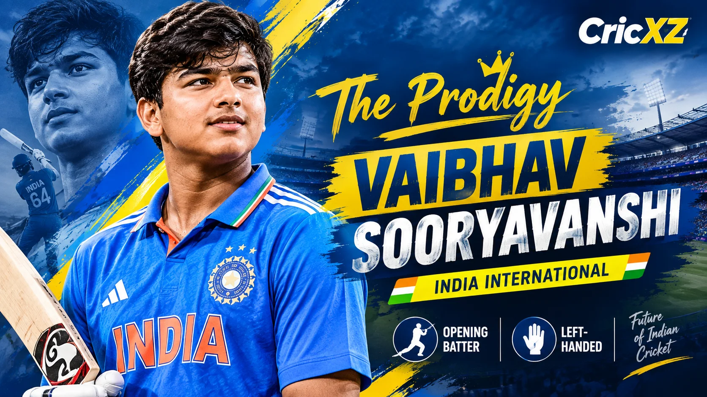

T20 Internationals
- Matches
- 10
- Innings
- 10
- Runs
- 295
- Highest score
- 81
- Batting average
- 29.50
- Strike rate
- 185.53
- Hundreds
- 0
- Fifties
- 2

Vaibhav Sooryavanshi is a left-handed opening batter for India, Rajasthan Royals and Bihar. On 14 November 2026, aged 15 years and 232 days, he became the youngest captain in men's T20 cricket when he led Bihar against Saurashtra in Indore.
Updated: 14 November 2026. T20I career totals and the completed IPL 2026 season are separate records; the domestic captaincy innings is not a T20I.
Calculation: T20I strike rate is calculated from 295 runs in 159 balls (185.53). The source summary displays 185.54. IPL 2026 remains a season snapshot, not an IPL career total.
Vaibhav Sooryavanshi's meteoric rise through the Indian cricket system has been compressed into an unusually short timeline. Making his First-Class debut for Bihar at the age of just 12 years and 284 days, he quickly demonstrated that age is merely a number when matched with generational talent.
At senior international level, Vaibhav has scored 295 runs in 10 T20Is at a calculated strike rate of 185.53, including two half-centuries and a highest score of 81. His breakout IPL 2026 season was even more explosive: 776 runs in 16 matches at a strike rate of 237.30, with 72 sixes and the Orange Cap.
He broke the internet in April 2025 when he became the youngest centurion in IPL history (101 off 38 balls), which also stood as the fastest IPL century by an Indian batter (35 balls). Recently, he was a key contributor in the Asian Games 2026, bringing his fearless striking to the global stage.
January 2024 (Age 12)
For Bihar against Mumbai in the Ranji Trophy.
April 2025 (Age 14)
For Rajasthan Royals, becoming the youngest player in IPL history.
4 July 2026 (Age 15)
For India against England at Emirates Old Trafford, Manchester.
On 14 November 2026 at Holkar Stadium in Indore, Sooryavanshi led Bihar against Saurashtra in the Syed Mushtaq Ali Trophy. At 15 years and 232 days, he passed Croatia's Zach Vukusic (17 years and 311 days) as the youngest captain in men's T20 cricket. Read the captaincy record and match report.
He struck two fours and one six before Chetan Sakariya caught him off his own bowling. Bihar made 137/9; Saurashtra reached 138/5 in 16.3 overs to win by five wickets.
His senior India record stands at 295 runs from 10 T20Is, averaging 29.50, with a highest score of 81 and two fifties. His latest T20I innings was 45 from 19 balls against New Zealand on 27 October 2026.
Reports differ on whether he will also lead against Railways on 16 November. Rajasthan Royals lists the second fixture, while Cricbuzz quotes Bihar chief selector Harvinder Singh saying he is available only for the opener before India A duty. A second captaincy appearance is not treated as confirmed here.
Made his senior T20I debut for India at 15 years and 99 days against England.
Won the Orange Cap in IPL 2026 with 776 runs, at an average of 48.50 and a strike rate of 237.30.
Scored 175 off 80 balls against England in the 2026 Under-19 World Cup final, helping India win by 100 runs.
Led Bihar against Saurashtra on 14 November at 15 years and 232 days. This is a domestic T20 captaincy record, not an India captaincy appointment.
Scored a 35-ball century against Gujarat Titans at the age of 14, the fastest by any Indian in IPL history.
Debuted in First-Class cricket for Bihar at the incredible age of 12 years and 284 days.
Checked: 14 November 2026. T20I totals exclude domestic SMAT matches. No combined T20 career total is shown because current sources disagree on that count. The IPL card covers the completed 2026 season only. Captaincy availability is qualified where reports conflict.